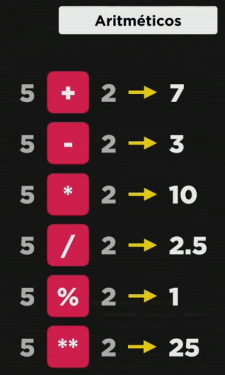

Existem algumas famílias de operadores:
Temos os operadores aritméticos usados para cálculos:
Esses são operadores binários, que precisam de dois operandos. Operandos são os números e operador o sinal. Usamos % para uma divisão inteira, ele é o operador de resto da divisão inteira. No exemplo acima 5/2 tem o resto 1, paramos antes de precisarmos inserir a vírgula. Lemos 5 por cento 2.
O ** é o operador de potência.No exemplo acima seria 52que equivale a 25.
Cuidado! Temos a chamada precedência de operadores:
Para mudar a ordem de precedência usamos os parênteses, assim como a matemática:

A ordem de precedência no javascript é:
Na terceira linha temos o *, / e % que tem a mesma ordem de precedência. Se por acaso mais de um deles estiverem na mesma expressão usamos da esquerda pra direito, a ordem é de quem aparecer primeiro.
Para guardar os valores dessas expressões usamos o var atributo. No primeiro exemplo o resultado da expressão (8) fica guardado na memória. Dizemos que var a recebe 5 + 3.
Temos as auto-atribuições, que são as atribuições da própria variável.
A primeira é uma atribuição simples, as outras são auto-atribuições. Meu n agora vale 7 e não mais 3. Isso é a auto-atribuição.
Podemos simplificar as auto-atribuições da seguinte forma (só vale se n receber ELE MESMO):
Aplicação no node:
Existe um simplificador ainda maior que é o operador de incremento.
Antes:
Depois:
Aplicação no node (incrementa 1):
Aparece o valor não alterado porque o n vem antes do ++. Porém nas linguagens de programação tem como o ++ vir antes (seria um pré-incremento), como mostrado no final no node.